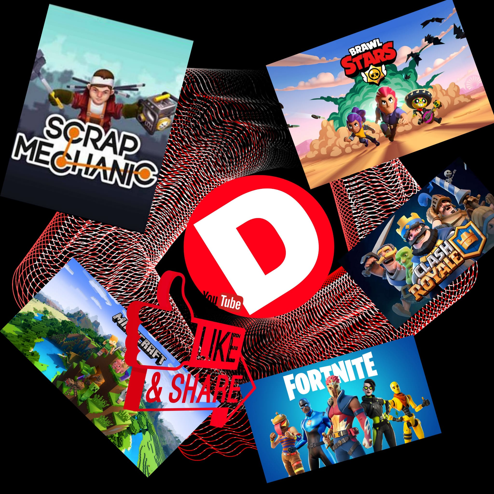

01Minecraft · Fabric
FractaliaMod
Mod client Fabric pensé pour le serveur Fractalia : HUD, statistiques, suivi des machines, noyaux et animaux, configuration et intégrations.
JavaFabric1.21.4ModMenu
CurseForge ↗

DeltagabDÉVELOPPEUR · CRÉATEUR · BUILDER
Je suis Deltagab, développeur passionné par Java, Python, Minecraft et le développement web. Je construis des outils et des mods.
01 — À PROPOS
Je développe des projets parce que j'aime comprendre comment les choses fonctionnent — puis les pousser plus loin.
De la création de mods Minecraft aux applications Java, en passant par Python, les interfaces web et les outils personnalisés, je préfère apprendre en construisant.
Mon objectif : créer des projets propres, utiles et agréables à utiliser, tout en continuant à progresser techniquement.
Java · Python · JavaScript
Minecraft · UI · outils
J'apprends en expérimentant
02 — PROJETS
Mod client Fabric pensé pour le serveur Fractalia : HUD, statistiques, suivi des machines, noyaux et animaux, configuration et intégrations.
Plugin Minecraft Bukkit orienté fight : économie, round. ( projet en pause )
Site Web pour calculer son score au jeu de société 7 Wonders
Launcher JavaFX avec récupération des versions Minecraft, téléchargement, progression et interface moderne.
Expérimentations de contrôle du curseur par gestes avec OpenCV, MediaPipe et automatisation système.
Sites et outils web avec interfaces personnalisées, calculateurs, dashboards et petites applications utiles.
03 — COMPÉTENCES
Un projet n'a pas besoin d'être énorme pour être intéressant. Il faut surtout avoir envie de le rendre meilleur.
04 — CONTACT
Que ce soit pour discuter d'un projet, d'une collaboration ou simplement échanger sur le développement, mes messages sont ouverts.